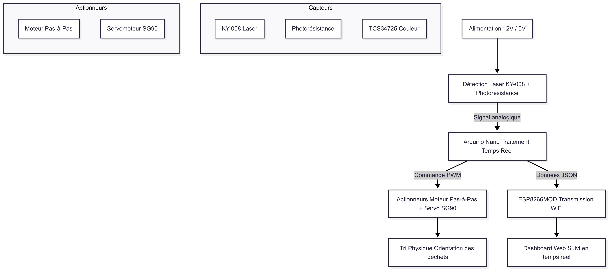
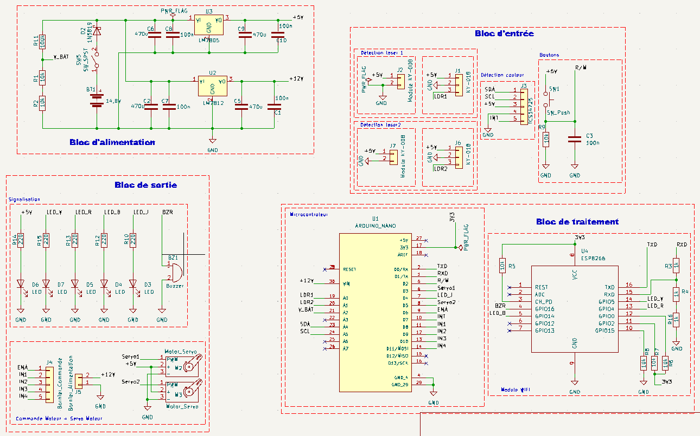

Documentation Électronique
Système de Convoyeur Intelligent
Introduction
Ce document présente l'implémentation électronique du système de convoyeur intelligent pour le tri des déchets. Le système utilise une architecture modulaire avec des blocs fonctionnels distincts pour l'alimentation, la détection, le traitement et l'actionnement.
Composants Principaux
- Arduino Nano (ATmega328P) - Cœur du système
- ESP8266MOD-12 - Communication WiFi
- Régulateurs 7805 et 7812 - Gestion de l'alimentation
- Photorésistance + KY-008 - Détection des objets
- Moteur pas à pas 12V + L298N - Mouvement du convoyeur
- Servomoteur - Mécanisme de tri
Fig. 1 - Vue d'ensemble du système électronique
Architecture du Système
Description Fonctionnelle
Alimentation
Conversion de la tension batterie en 12V pour les moteurs et 5V pour les circuits logiques avec régulation précise
Détection d'Objets
Barrière laser KY-008 avec photorésistance pour une détection précise à ±1mm
Traitement Temps Réel
Arduino Nano avec algorithme optimisé pour une latence < 5ms
Flux de Données
Composants Électroniques
 Arduino Nano
Arduino Nano
Fonction : Cœur du système - Contrôle tous les autres composants
Description détaillée :
L'Arduino Nano est une carte microcontrôleur compacte basée sur l'ATmega328P. Elle agit comme le cerveau du système, exécutant le programme principal qui coordonne toutes les fonctions :
- Programmation : Se programme via l'IDE Arduino avec un câble USB mini-B
- Connectivité : 22 broches d'E/S dont 14 numériques (dont 6 PWM) et 8 analogiques
- Mémoire : 32Ko de flash (programme), 2Ko de SRAM (données), 1Ko EEPROM
- Communication : UART, I2C et SPI pour dialoguer avec d'autres composants
- Alimentation : 7-12V via la broche VIN ou 5V via USB
Conseils pratiques : Pour une utilisation optimale, téléchargez les drivers CH340 si nécessaire et vérifiez bien le port COM dans l'IDE Arduino avant le téléversement.
 Module ESP8266 (ESP-12F)
Module ESP8266 (ESP-12F)
Fonction : Communication WiFi avec l'interface web
Description détaillée :
Ce module WiFi économique intègre un microcontrôleur Tensilica 32-bit avec pile TCP/IP complète :
- Protocoles : 802.11 b/g/n WiFi à 2.4GHz avec support WPA/WPA2
- Portée : Jusqu'à 100m en champ libre (dépend de l'antenne et des obstacles)
- Consommation : 80mA en transmission, <1mA en veille
- Interface : UART à 115200 bauds par défaut (réglable jusqu'à 4Mbps)
- Programmation : Compatible AT-command ou programmable via Arduino IDE
Conseils pratiques : Utilisez un diviseur de tension 3.3V/5V pour la communication avec l'Arduino. Pensez à reset le module si la connexion WiFi est instable.
 Régulateur LM7812
Régulateur LM7812
Fonction : Régulation tension 12V pour moteurs
Description détaillée :
Régulateur linéaire de tension fixe 12V dans un boîtier TO-220 :
- Entrée : Accepte 14-35V DC (minimum 14.5V pour bon fonctionnement)
- Sortie : 12V ±0.2V avec courant max 1A (1.5A avec dissipateur thermique)
- Protections : Limitation de courant et coupure thermique intégrées
- Ripple : 70dB de réjection des perturbations d'entrée
- Dissipation : Nécessite un dissipateur thermique pour courants >500mA
Conseils pratiques : Placer un condensateur 0.33µF en entrée et 0.1µF en sortie pour la stabilité. La différence Vin-Vout doit être d'au moins 2.5V.
 Régulateur LM7805
Régulateur LM7805
Fonction : Régulation tension 5V pour logique
Description détaillée :
Régulateur linéaire classique pour alimentation des circuits logiques :
- Entrée : 7-25V DC (minimum 7.5V recommandé)
- Sortie : 5V ±0.25V avec courant max 1A
- Stabilité : Variation de ±1% pour charges de 5mA à 1A
- Température : Fonctionne de 0°C à 125°C
- Efficacité : Environ 40% (60% de l'énergie dissipée en chaleur)
Conseils pratiques : Pour réduire la dissipation thermique, préférer une tension d'entrée entre 7.5V et 12V. Un condensateur 10µF en sortie améliore la réponse transitoire.
 Photorésistance GL5528
Photorésistance GL5528
Fonction : Détection de la lumière laser
Description détaillée :
Composant dont la résistance varie avec l'intensité lumineuse :
- Plage spectrale : Maximum sensibilité à 540nm (vert)
- Résistance : 10-20kΩ sous lumière ambiante (500 lux), 1-2MΩ dans l'obscurité
- Temps réponse : 20ms pour monter, 30ms pour descendre
- Température : Coefficient de température de ±0.5%/°C
- Puissance max : 100mW à 25°C
Montage pratique : Utiliser en pont diviseur de tension avec une résistance fixe de 10kΩ. Placer un condensateur en parallèle pour filtrer les variations rapides.
 Module Laser KY-008
Module Laser KY-008
Fonction : Émetteur laser pour détection d'objets
Description détaillée :
Module laser rouge avec diode de classe 2 :
- Longueur d'onde : 650nm (rouge visible)
- Puissance : <5mW (sans danger pour les yeux)
- Portée : Jusqu'à 50cm en utilisation standard
- Alimentation : 5V DC, consomme ~30mA
- Angle : Faisceau de 1-2° de divergence
Sécurité : Ne jamais diriger vers les yeux. Pour une meilleure détection, utiliser une lentille pour focaliser le faisceau sur la photorésistance.
 Moteur Pas à Pas 28BYJ-48
Moteur Pas à Pas 28BYJ-48
Fonction : Mouvement précis du convoyeur
Description détaillée :
Moteur unipolaire 5V avec réducteur intégré :
- Angle pas : 5.62° par pas (64 pas/tour moteur, 2048 pas/tour arbre)
- Couple : 34.3mN.m (3.5kg.cm) à vitesse nominale
- Résistance : 50Ω par bobine, courant 100mA par phase
- Réducteur : Rapport 1:64 (64 tours moteur = 1 tour arbre)
- Précision : ±5% non cumulatif
Contrôle : Nécessite un driver ULN2003 ou similaire. Pour un mouvement fluide, utiliser un délai de 2-5ms entre pas en mode wave drive ou half-step.
 Driver Moteur L298N
Driver Moteur L298N
Fonction : Contrôle des moteurs pas à pas et DC
Description détaillée :
Double pont en H pour contrôle bidirectionnel de moteurs :
- Tension : Alimentation moteur 5-35V, logique 5V
- Courant : 2A par pont (max 3A peak)
- Puissance : Jusqu'à 25W par canal
- Contrôle : Signaux TTL/CMOS compatibles
- Protections : Diodes de roue libre intégrées
Branchement : Activer les jumpers d'alimentation 5V si utilisation de la régulation intégrée. Pour les moteurs pas à pas, utiliser les sorties OUT1-OUT4 avec les broches IN1-IN4 et EN A.
 Servomoteur SG90
Servomoteur SG90
Fonction : Mécanisme de tri des objets
Description détaillée :
Servomoteur standard à rotation limitée :
- Plage : 180° de rotation (90° à gauche et droite)
- Couple : 1.8kg.cm à 4.8V, 2.2kg.cm à 6V
- Vitesse : 0.1s/60° à 4.8V, 0.08s/60° à 6V
- Signal : PWM 50Hz (20ms), pulse 1-2ms pour 0-180°
- Consommation : 100mA en mouvement, 10mA au repos
Contrôle : Utiliser la bibliothèque Servo.h avec une résolution théorique de ~1°. Éviter de bloquer mécaniquement le servo sous tension pour ne pas endommager le moteur.
 Batterie Li-ion 4S
Batterie Li-ion 4S
Fonction : Alimentation mobile du système
Description détaillée :
Pack batterie lithium-ion 14.8V :
- Configuration : 4 cellules 18650 en série (4S)
- Capacité : 2000mAh (29.6Wh)
- Tension : 16.8V pleine charge, 12V décharge complète
- Courant : Décharge continue 2C (4A), max 5A
- Protection : PCB intégré contre surcharge/décharge profonde
Sécurité : Utiliser uniquement un chargeur 4S Li-ion équilibré. Ne jamais décharger en dessous de 3V/cellule. Stocker à 50% de charge pour une longue durée de vie.
 Condensateur 475µF 25V
Condensateur 475µF 25V
Fonction : Filtrage de l'alimentation
Description détaillée :
Condensateur électrolytique aluminium radial :
- Capacité : 475µF ±20%
- Tension : 25V DC (max 30V surge)
- ESR : ~0.5Ω à 20°C, 100kHz
- Température : -40°C à +105°C
- Durée vie : 2000h à 105°C
Montage : Respecter la polarité (bande "-" sur le boîtier). Pour les hautes fréquences, placer un condensateur céramique 100nF en parallèle.
 Résistances 1kΩ/10kΩ
Résistances 1kΩ/10kΩ
Fonction : Limitation de courant et ponts diviseurs
Description détaillée :
Résistances carbone/métal film 1/4W :
- Tolérance : ±5% (doré dans le code couleur)
- Température : Coefficient ±250ppm/°C
- Puissance : 0.25W (max 0.4W en pic)
- Tension max : 250V (limité par la puissance)
- Applications : Pull-up/down, limitation LED, diviseurs tension
Calcul : Pour une LED standard (20mA, 2V) avec alimentation 5V : R = (5V-2V)/0.02A = 150Ω. Toujours vérifier la dissipation : P = V²/R.
 Connecteurs et Câblage
Connecteurs et Câblage
Fonction : Interconnexion entre les différents modules du système
Description détaillée :
Ensemble de connecteurs standardisés pour assurer des liaisons fiables :
1. Connecteurs Dupont 2.54mm
- Type : Mâle/femelle, droit/angulaire
- Pas : 2.54mm (standard breadboard)
- Section fil : 20-24 AWG (0.2-0.5mm²)
- Courant max : 3A par contact (1A continu recommandé)
- Applications : Liaisons entre cartes, connexion capteurs
2. Borniers à vis
- Type : Bornier 2-12 positions, pas 5mm
- Section fil : Jusqu'à 2.5mm² (14 AWG)
- Courant max : 10A par borne
- Couplage : Pince à vis auto-serrante
- Applications : Alimentation moteurs, connexions puissance
3. Connecteurs JST
- Série : PH (2.0mm), XH (2.5mm), SM (3.0mm)
- Verrouillage : Clip de sécurité intégré
- Courant : 2-3A selon modèle
- Applications : Connexions semi-permanentes, batteries
Bonnes Pratiques de Câblage
- Code couleur : Rouge (+VCC), Noir (GND), autres couleurs pour signaux
- Longueur : Garder les câbles les plus courts possibles pour réduire les interférences
- Nappes : Grouper les câbles similaires (alim, signaux, données)
- Sertissage : Utiliser des pinces à sertir pour des connexions professionnelles
- Marquage : Étiqueter les câbles aux deux extrémités
Sécurité Électrique
- Vérifier l'isolation des câbles haute tension (>12V)
- Ne pas surcharger les connecteurs (respecter les courants max)
- Protéger les connexions exposées avec gaine thermo ou silicone
- Pour les hautes tensions, utiliser des connecteurs avec verrouillage
Liste Complète des Composants
| Composant | Référence | Quantité | Fonction Principale | Caractéristiques Clés |
|---|---|---|---|---|
| Arduino Nano | ATmega328P | 1 | Contrôleur principal | 16MHz, 32KB Flash, 14 E/S, 8 analogiques |
| Module WiFi | ESP8266MOD-12 | 1 | Communication sans fil | 802.11 b/g/n, UART, 80mA TX |
| Régulateur 12V | LM7812 | 1 | Alimentation moteurs | 1A max, TO-220, 14-35V in |
| Régulateur 5V | LM7805 | 1 | Alimentation logique | 1A max, TO-220, 7-25V in |
| Photorésistance | GL5528 | 1 | Détection lumière | 10kΩ (light), 1MΩ (dark) |
| Module Laser | KY-008 | 1 | Détection objet | 650nm, 5mW, 50cm portée |
| Moteur pas à pas | 28BYJ-48 | 1 | Mouvement convoyeur | 12V, 2048 pas/tour, 3.5kg.cm |
| Driver Moteur | L298N | 1 | Contrôle moteur | 2A/phase, 46V max, double pont H |
| Servomoteur | SG90 | 1 | Mécanisme de tri | 180°, 4.8-6V, 0.1s/60° |
| Batterie | Li-ion 4S | 1 | Alimentation mobile | 14.8V, 2000mAh, 4A max |
| Condensateur | 475µF 25V | 2 | Filtrage alim | Électrolytique, 105°C, 2000h |
| Résistances | 1kΩ, 10kΩ | 5 | Circuits divers | 1/4W, 5%, carbone/métal |
| Connecteurs | Dupont 2.54mm | 10 | Interconnexions | Mâle/femelle, 20-24AWG |
Alimentation
Circuit d'Alimentation Principal

Fig. 3 - Schéma du circuit d'alimentation
Ce circuit fournit les tensions nécessaires à tous les composants :
- Batterieau Lithium 4S 14,8V : Source d'énergie principale
- Régulateur 7812 : Stabilise la tension à 12V pour le moteur pas à pas et pour l'alimentation de la carte Arduino NANO par la broche VIN.
- Régulateur 7805 : Fournit du 5V pour les capteurs et les servomoteurs.
- Protections :
- Diode anti-retour
- Condensateurs de stabilisation (475µF + 100nF)
Conseils d'Implémentation
- Utiliser des dissipateurs thermiques pour les régulateurs
- Placer les condensateurs au plus près des régulateurs
- Prévoir des pistes larges pour les lignes 12V
Bloc d'Entrée
Schéma Fonctionnel Complet
Fig. 4 - Architecture complète du bloc d'entrée
Fonctionnalités
- Détection optique par barrière laser
- Conditionnement du signal analogique
- Seuillage numérique pour déclenchement
Spécifications
- Portée : 15-50 cm
- Temps de réponse : < 10ms
- Consommation : 25mA
Bloc de Traitement
Architecture Centrale
Fig. 5 - Schéma fonctionnel du traitement
Flux de Données
- Acquisition des capteurs
- Traitement des signaux
- Décision de tri
- Génération des commandes
Configuration
- Horloge : 16MHz
- Mémoire : 32KB Flash
- Entrées/Sorties : 22 numériques
Bloc de Sortie
Schéma des Actionneurs
Fig. 6 - Architecture des systèmes d'actionnement
Signalisation visuelle
- LED Rouge pour les cubes de couleur rouge
- LED Vert pour les cubes de couleur verte
- LED Jaune pour les cubes de couleur jaune
- LED Bleue pour les cubes de couleur bleue
- LED Blanche pour l'état du système
- Buzzer pour signaler un mauvais tri ou les couleurs inconnues
Contrôle Moteur
- Driver L298N
- Alimentation 12V isolée
- Protections contre les surtensions
Mécanisme de Tri
- Servomoteur 180°
- Contrôle PWM
- Positions prédéfinies
Schéma Électronique Complet
Circuit Principal
Fig. 7 - Schéma complet du système (cliquer pour agrandir)
PCB Final

Fig. 8 - Typon du PCB

Fig. 9 - Vue de la couche supérieure
Fig. 10 - Vue de la couche inférieure
Caractéristiques du PCB
- Dimensions : 138mm x 85mm
- Couches : 1 couche cuivrée (B.Cu)
- Spécifications :
- Pistes puissance : 0.8mm
- Pistes signal : 0.6mm
- Note : Prototype réalisé sur veroboard en attendant fabrication PCB
Prototype Physique
Fig. 11 - Vue d'ensemble du prototype
Fig. 11 - Soudure sur veroboard
Fig. 12 - Détail des interconnexions
Téléchargements
Fichiers Complets
Téléchargez l'ensemble des fichiers sources pour modification ou fabrication :
Instructions
- KiCad : Version 6.0 ou supérieure requise pour ouvrir les fichiers
- Gerber : Compatible avec la plupart des fabricants de PCB
Implémentation Logicielle
Configuration, Setup et Loop
// === Définition des broches ===
#define START_PHOTO_PIN A1
#define STOP_PHOTO_PIN A2
#define BUTTON_PIN 12
#define LED_PIN 7
#define IN1 8
#define IN2 9
#define IN3 10
#define IN4 11
#include <Wire.h>
#include <Adafruit_TCS34725.h>
Adafruit_TCS34725 tcs = Adafruit_TCS34725();
const int bleu = 3;
const int rouge = 4;
const int jaune = 5;
const int vert = 6;
const int threshold = 450;
const int stepDelay = 5;
const unsigned long longPressTime = 2000;
bool systemActive = false;
unsigned long buttonPressTime = 0;
void setup() {
pinMode(IN1, OUTPUT);
pinMode(IN2, OUTPUT);
pinMode(IN3, OUTPUT);
pinMode(IN4, OUTPUT);
pinMode(BUTTON_PIN, INPUT);
pinMode(LED_PIN, OUTPUT);
stopMotor();
digitalWrite(LED_PIN, LOW);
Serial.begin(9600);
Serial.println("Système prêt. En attente...");
if (tcs.begin()) {
Serial.println("Capteur TCS34725 détecté !");
tcs.setInterrupt(false);
} else {
Serial.println("Erreur capteur TCS34725");
while (1);
}
pinMode(bleu, OUTPUT);
pinMode(rouge, OUTPUT);
pinMode(jaune, OUTPUT);
pinMode(vert, OUTPUT);
digitalWrite(rouge, LOW);
digitalWrite(bleu, LOW);
digitalWrite(jaune, LOW);
digitalWrite(vert, LOW);
}
void loop() {
Serial.print("Start capteur: ");
Serial.print(analogRead(START_PHOTO_PIN));
Serial.print(" | Stop capteur: ");
Serial.println(analogRead(STOP_PHOTO_PIN));
handleButton();
if (!systemActive && detectStartSensor()) {
activateSystem("Détection START → Activation");
}
if (systemActive && detectStopSensor()) {
deactivateSystem("Détection STOP → Arrêt");
}
if (systemActive) {
stepMotor();
delay(stepDelay);
String couleur = detectColorTCS34725();
Serial.print("Couleur détectée : ");
Serial.println(couleur);
}
}Fig. 1 - Configuration et logique principale du système TRC 2025
Broches et composants
- Capteurs analogiques : A1 (début), A2 (fin)
- Moteur pas à pas : IN1 à IN4
- LEDs de tri : broches 3 à 6
- Bouton multifonction : broche 12 (pull-down)
- Capteur TCS34725 pour détection couleur
Communication Série avec ESP8266 pour Interface Web
L'Arduino Nano transmet les données de tri à l'ESP8266 NodeMCU via une liaison série. Ces données sont ensuite affichées sur le dashboard web, incluant les compteurs de couleurs, la position de tri, et l'heure du dernier déchet traité.
Connexion matérielle
- TX Arduino Nano → RX ESP8266 (via diviseur de tension)
- RX Arduino Nano ← TX ESP8266
- Baudrate :
9600
Fonction Arduino pour l'envoi des données
// Compteurs globaux
int compteurRouge = 0, compteurVert = 0, compteurJaune = 0, compteurBleu = 0;
void envoyerDonneesWeb(String couleur, int position) {
if (couleur == "Rouge") compteurRouge++;
else if (couleur == "Vert") compteurVert++;
else if (couleur == "Jaune") compteurJaune++;
else if (couleur == "Bleu") compteurBleu++;
Serial.print("{\"couleur\":\"");
Serial.print(couleur);
Serial.print("\",\"position\":");
Serial.print(position);
Serial.print(",\"compteurs\":{\"Rouge\":");
Serial.print(compteurRouge);
Serial.print(",\"Vert\":");
Serial.print(compteurVert);
Serial.print(",\"Jaune\":");
Serial.print(compteurJaune);
Serial.print(",\"Bleu\":");
Serial.print(compteurBleu);
Serial.println("}}");
}Traitement côté ESP8266
L'ESP8266 lit les données via Serial.readStringUntil('\\n'), les parse et
met à jour dynamiquement le dashboard web. Chaque couleur est comptabilisée et affichée
en temps réel.
Les fonctions comme detectColorTCS34725()
sont documentées dans la section informatique
Compatibilité : Arduino IDE 2.x ou supérieur
Tests et Validation
Plan de Test
- Test Alimentation : Mesurer les tensions 12V, 5V et 3.3V sous charge
- Test Détection : Vérifier la détection d'objets à différentes distances
- Test Couleur : Valider l'identification des 4 couleurs
- Test Moteur : Vérifier le mouvement précis du convoyeur
- Test Tri : Valider le mécanisme de tri pour chaque couleur
- Test WiFi : Vérifier l'envoi des données à l'interface web
Démonstration
Vidéo : Fonctionnement du système complet
Note importante
Lors de la simulation, la pile s'est déchargée, ce qui explique pourquoi vous voyez une main actionner manuellement le convoyeur.
- LED blanche : Indique la mise en marche du convoyeur (démarrage du moteur).
- Autres LED : Indiquent la couleur des cubes détectés.
Conclusion
Bilan Technique
La solution électronique répond aux exigences du projet :
- Détection fiable des objets et des couleurs
- Contrôle précis des actionneurs
- Communication stable avec l'interface web
- Autonomie suffisante (>3 heures)
Points Forts
- Architecture modulaire bien séparée
- Protections électriques complètes
- Documentation détaillée
- Code optimisé et commenté
Perspectives
Améliorations Possibles
- Ajout d'une batterie de secours
- Intégration de capteurs supplémentaires
- Optimisation de la consommation
- Version sans fil complète
Évolutions Futures
- Intégration IoT avancée
- Analyse en temps réel
- Interface utilisateur améliorée